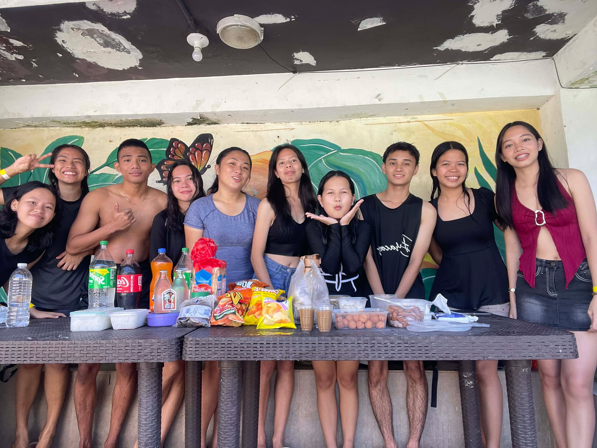

Natuloy ang swimming na plano ni Natalie. Pero may kontrabidang activities.
Call Time na hindi nasusunod
Nagising ako ng 6 AM para mag-prepare for swimming. Need ko pa kasing mag-paalam sa nanay ko para makapunta at para may allowance. Dumating ako nang 8AM sa Villa Aguilar, ako ang nauna para i-check na rin ang place.
Kinausap ko ang receptionist para malaman ang price ng cottage. Nag-message naman ako kaagad sa gc dahil tumaas pala ang presyo nito kaysa sa dati. Dumating sila na almost 10 AM na dahil bumili pa ng pagkain sa grocery.
Miming Tym
Wala pa yung tatlong kasama namin sa COF kaya hinintay muna namin silang dumating habang nag-lilibot sa resort at nagpi-picture. Then finally, dumating sila mga 11 AM na. Kumain muna kami dahil lunch na.
At last, it's swimming time! Dahil 'di naman ako marunong lumangoy, nagpa-turo muna ako kila CJ at Mishli. Sobrang pasensyoso nila at sobrang bait. Tinutulungan talaga nila ako namakalutang at makagalaw sa tubig. Sobrang saya ng experience ko kahit na hindi ako marunong lumangoy. Salamat talaga sa kanila!

Kontrabidang Activities
Umahon na kami sa tubig para mag-ayos dahil uwian na. And guess what?! May mga bagong activities na sinend ang mga Profs.! YES! Professors, for short profs. Marami na namang need i-comply hays. Marami pa namang quizzes and reportings next week.
'Til next outing
Dahil na rin sa strict curfew ko ay nauna na akong umuwi kasama si Mishli na may aasikasuhin rin. Nagpaalam na kami sa mga kaibigan namin na kumakain pa bago umuwi. Sobrang saya ng outing namin at sobrang thankful ako na nakasama ko sila. Sana marami pa kaming ganitong bonding moments sa mga susunod.
(💿Time of Our Life - Day6) “한 페이지가 될 수 있게” “So this can become one page of our story.”
SA SUSUNOD ULIT NA OUTING 😚😚😚. KASAMA NA SILA Casey, Kazandra, Hazel, tsaka Rowie - Natalie
— Elaine